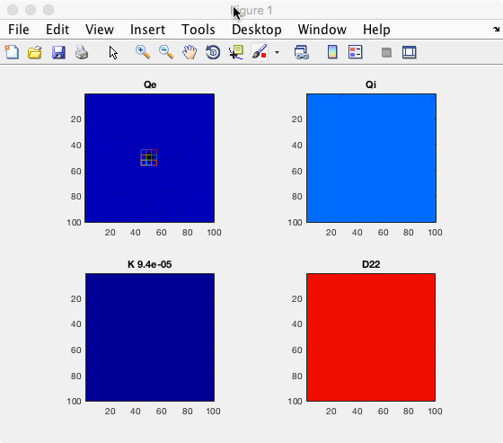
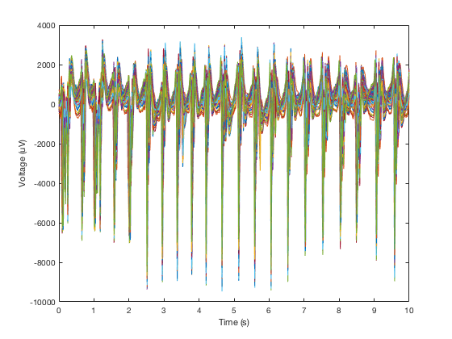
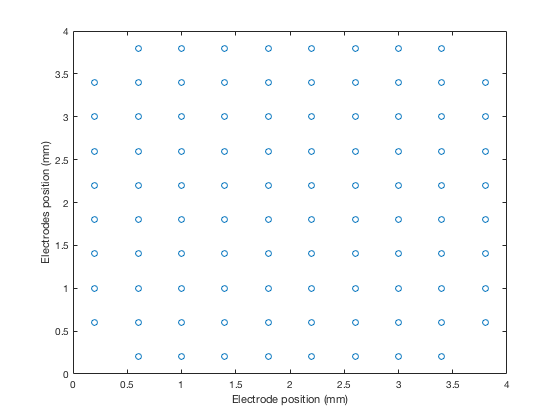
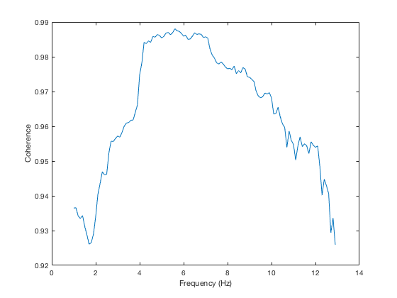
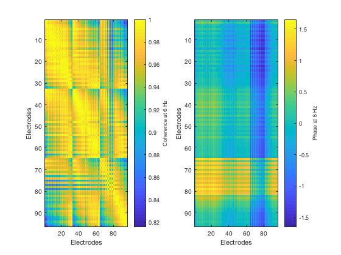
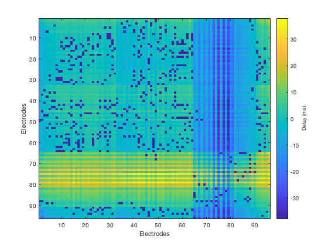
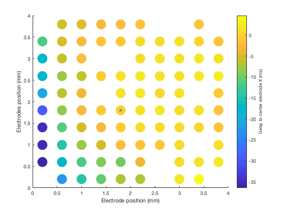
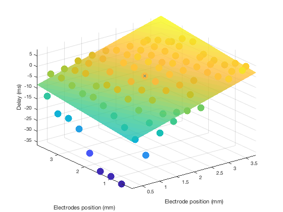

The matlab models available from the paper: Martinet LE, Fiddyment G, Madsen JR, Eskandar EN, Truccolo W, Eden UT, Cash SS, Kramer MA (2017) Human seizures couple across spatial scales through travelling wave dynamics. Nat Commun 8:14896 http://dx.doi.org/10.1038/ncomms14896 are available from the repository: https://github.com/Mark-Kramer/Seizure-Waves The Readme.md in the modeling folder contains the instructions: --- Seizure-Waves Run the function runseizingcortical_field.m to generate a simulation of a seizure. Two simulation scenarios are implemented which differ in the source of seizure activity: a fixed cortical source, and an ictal wavefront. The results are visualized as a series of maps, as in Figure 5c of the manuscript. A 10 s interval of the ECoG data are saved for wave analysis. Please see comments inside of the file runseizingcortical_field.m for more details. --- As the runseizingcortical_fields.m model runs a matlab figure:  displays (a movie) of wave phenomena and other activity. Under the analysis folder running the main_seizure_waves.m program generates these images:       